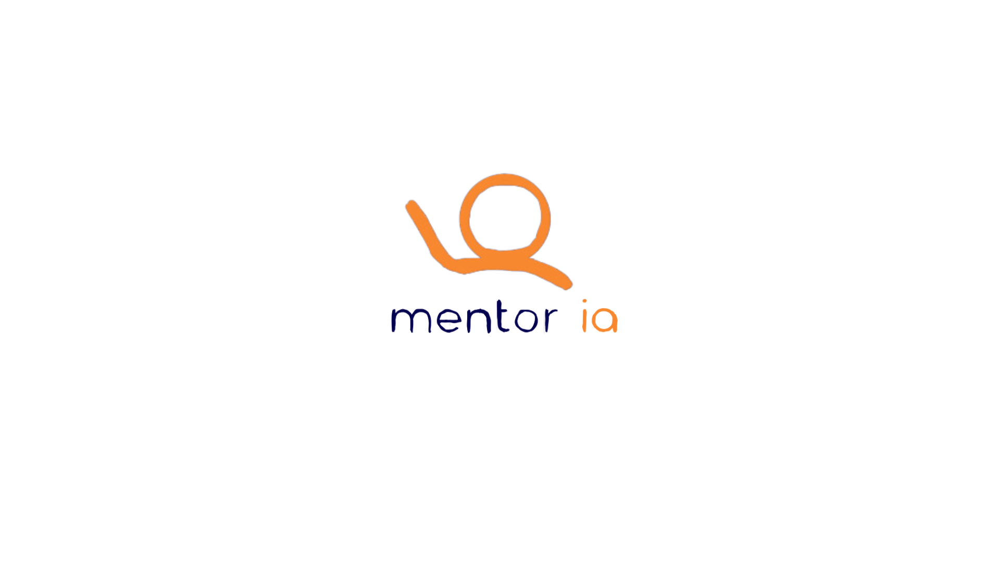
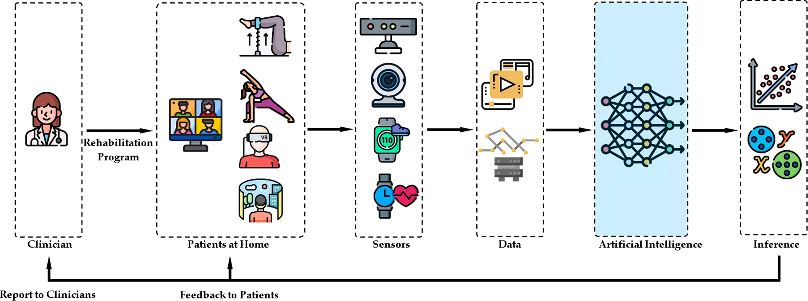
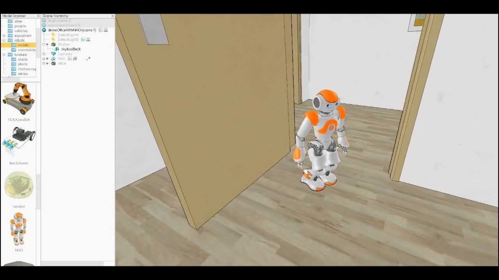

Mentor IA

Problem: Students need consistent, personalized academic support outside fixed mentoring hours.
Solution: Built a founder-led AI mentoring MVP focused on planning, course-aware feedback, and continuous iteration.
System: Full-stack architecture with Python/FastAPI services, MongoDB persistence, and a TypeScript/HTML/CSS frontend.
Impact: Established a deployable product foundation with a repeatable feedback loop for user-driven improvements.
Stack
Python
FastAPI
MongoDB
TypeScript
HTML/CSS
Open project
Rehabilitation AI Partner

Problem: Rehab programs struggle with adherence when support is not personalized in real time.
Solution: Built an RL-driven intervention system combining EMA signals with JITAI policy selection.
System: Decision pipeline integrating patient-state signals, policy logic, and intervention delivery pathways.
Impact: Created a production-oriented framework for adaptive support and longitudinal adherence evaluation.
Stack
RL
Python
Behavioral Modeling
EMA/JITAI
Open project
Movie Recommendation System

Problem: Recommendation quality and latency degrade without reliable ingestion and evaluation loops.
Solution: Designed a production pipeline with Kafka streaming, matrix factorization, and containerized serving.
System: Event ingestion, model scoring, and metadata enrichment services orchestrated in a Dockerized architecture.
Impact: Improved delivery readiness for real-time recommendations with clearer observability and iteration points.
Stack
Python
Kafka
Docker
Matrix Factorization
Open project
Humanoid Robot Navigation Controllers

Problem: Humanoid navigation requires stable path tracking under model and control uncertainty.
Solution: Implemented and benchmarked PID and Lyapunov controllers on RRT-generated trajectories.
System: Simulation workflow coupling path generation, controller execution, and comparative performance analysis.
Impact: Produced actionable stability and precision benchmarks to guide controller selection in practice.
Stack
Control Systems
Python
Simulation
Robotics
Open project